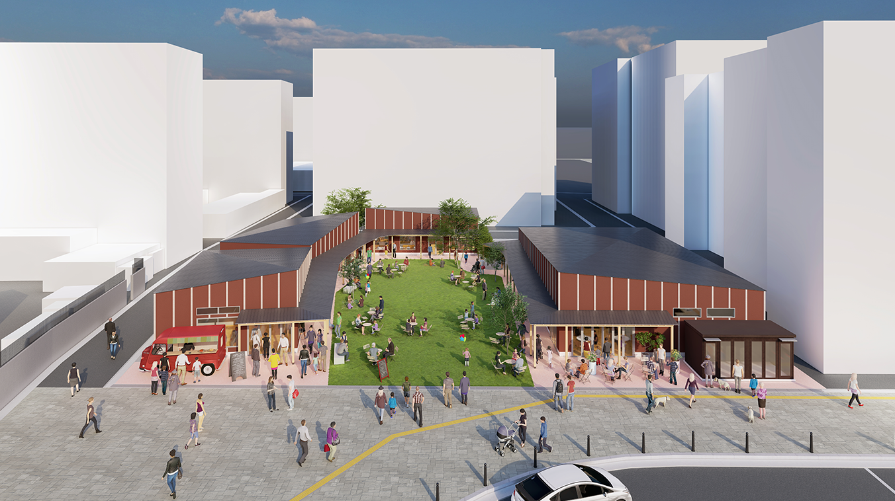
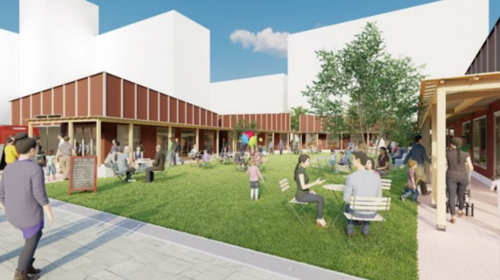
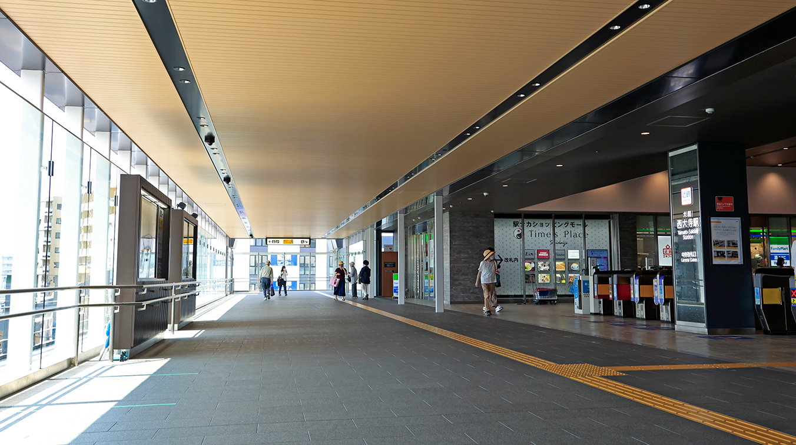
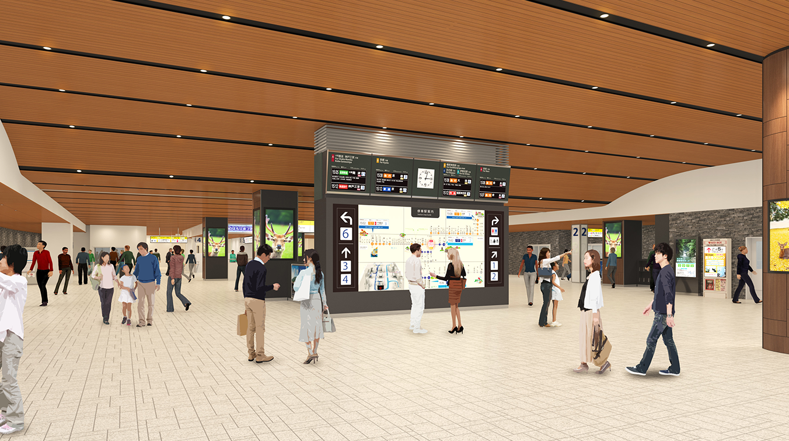
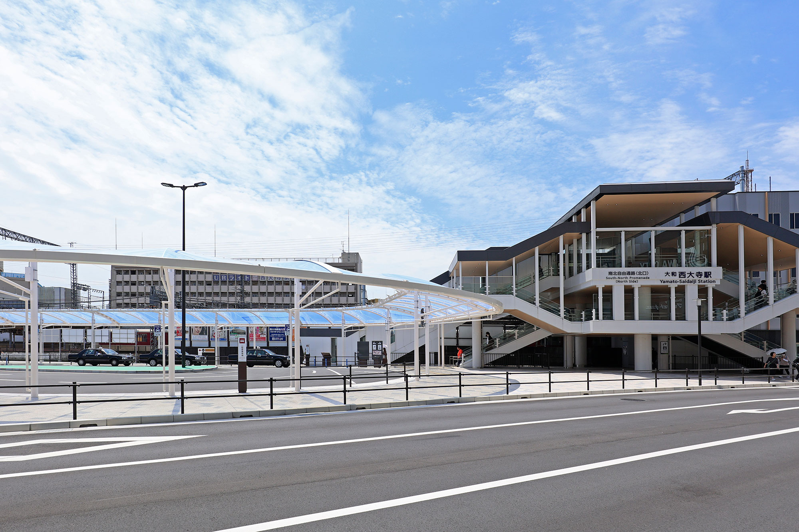

関電不動産開発がお届けする、新築分譲マンション「シエリア西大寺」の公式サイトです。近鉄「大和西大寺」駅徒歩7分、「大阪難波」駅・「京都」駅へ直結。奈良史上初、先進のZEH-M・低炭素建築物認定レジデンス。総61邸
再開発
確かな歴史を礎とし、
もっと暮らしやすい未来へ。
再開発
もっと暮らしやすい街へ、
今、さらなる進化を遂げる「大和西大寺」駅界隈。
アクセスの利便性はもちろん、
複合商業施設など多彩な生活施設が集積し、
毎日のお買い物にも便利な駅前エリアが、より暮らしやすく。
奈良市内はもとより、京都、大阪（なんば）、神戸などへのアクセスも快適な、県下最大級のターミナル近鉄「大和西大寺」駅。昭和60年代から再開発が進み、近年は駅の南北を結ぶ「自由通路」や「南口駅前広場」が完成し、さらに令和4年度末の完成を目指して「北口駅前広場」の整備も進行中です。これらの施設により、本件最寄りの北口駅前及び南口駅前が美しく便利になり、ショッピングセンターや「西大寺」のある駅南口とスムーズにつながるなど、新たな開放感や人の流れが生まれ、街が活気に包まれます。
2023年春 近鉄「大和西大寺」駅前に
人と街と緑が交わる多世代コミュニティの拠点となる「Coconimo Saidaiji」をオープン。
「人と街と緑が交わる商業施設」を基本コンセプトとし、駅前でありながら、約1,500m²の敷地の中央に芝生広場を設け、さまざまなイベントなどを開催する多目的空間がオープン。店舗構成は、気軽にお食事を楽しめる飲食店舗をはじめ、地域コミュニティの拠点「住まいと暮らしのぷらっとHOME」、愛犬家向けのサービス施設であるセルフ式 ドッグスパ「K・DogSpa」、キッチンカーなどを展開する予定です。コロナ禍により社会環境や人々の生活スタイルが変化する中においても、自然を感じ、人々から愛され続ける「人と緑と賑わいのあふれる新たなランドマーク」を目指しています。
- 
- 
駅には「南北自由通路」や、開放的な「南口駅前広場」が完成。
さらに、駅案内ロボットが登場する、
「近未来ステーション構想」も明らかに。
近鉄「大和西大寺」駅では、2021年春に便利な「南北自由通路」及び「南口駅前広場」が完成。 さらに「駅案内ロボット」など、AIやITの先端技術を活用した「近未来ステーション構想」も進められています。
- 
- 
駅北側エリアでは、2022年度末に
「近鉄大和西大寺駅北口駅前広場整備事業」の工事が完了しました。
駅北口では「南口駅前広場」と「南北自由通路」で繋がった「北口駅前広場」の整備が完了。
約4,000㎡の敷地に道路を拡幅させたバスターミナルやタクシー乗り場、広々とした歩行者空間、植栽ゾーンなどが完成しました。
- 
歴史あるまちで、一番新しい挑戦が生まれる。
近鉄「大和西大寺」駅界隈はアクセスにも生活利便性にも優れた奈良の副都心。また、奈良という土地柄、世界遺産を含めた深い深い歴史のある街でありつつも、近年の再開発で町並みも変わり、新たなる歴史を築こうとしています。本件も奈良建築を意識した外観デザインとともに、先進の設備や仕様を積極的に採用。“歴史あるまちで、一番新しい挑戦が生まれる”、そんなライフスタイルをご提案します。